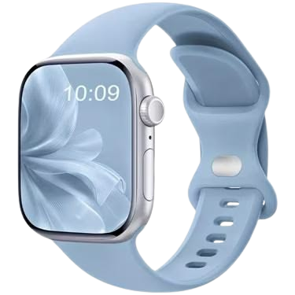

Kualitas Tinggi
Bodi kokoh dengan tali silikon lembut yang awet dan nyaman di kulit.
Pantau kesehatan, terima notifikasi, dan atur harimu langsung dari pergelangan tangan, dengan desain ramping yang nyaman dipakai seharian.

Empat alasan kenapa Digital Watch cocok menemani aktivitasmu setiap hari.
Bodi kokoh dengan tali silikon lembut yang awet dan nyaman di kulit.
Tampilan minimalis yang serasi untuk acara santai maupun formal.
Sensor kesehatan akurat dan koneksi Bluetooth yang stabil.
Menu sederhana yang langsung bisa dipakai, tanpa perlu belajar lama.
Digital Watch dirancang untuk kamu yang ingin tetap terhubung dan sehat tanpa ribet. Layar jernih, baterai awet, dan fitur lengkap dalam satu jam.